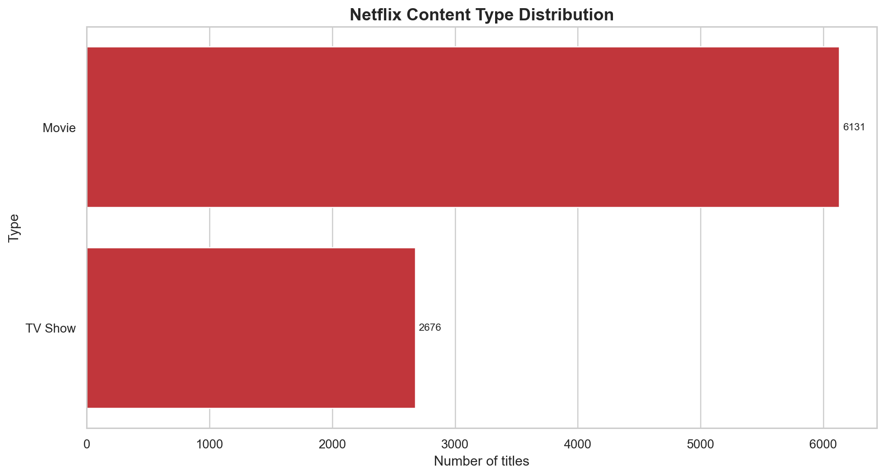
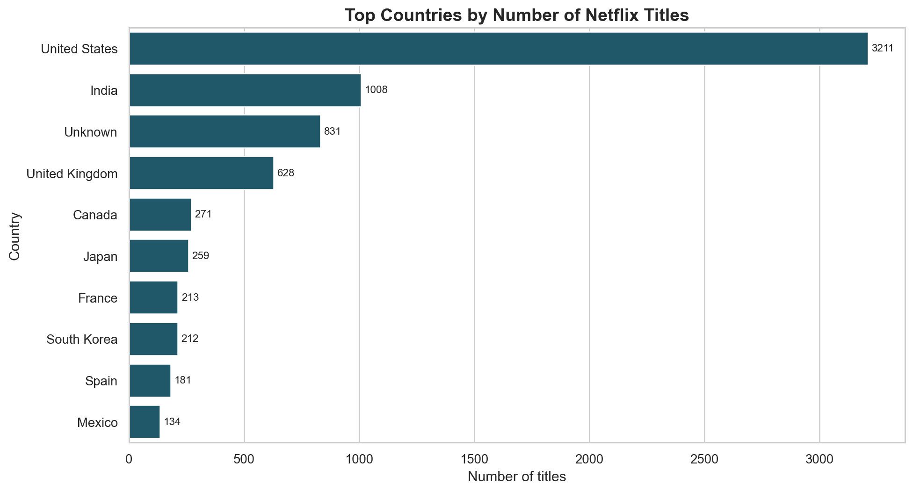
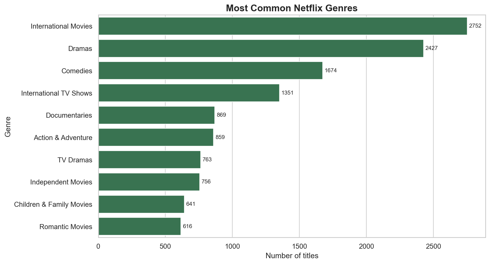
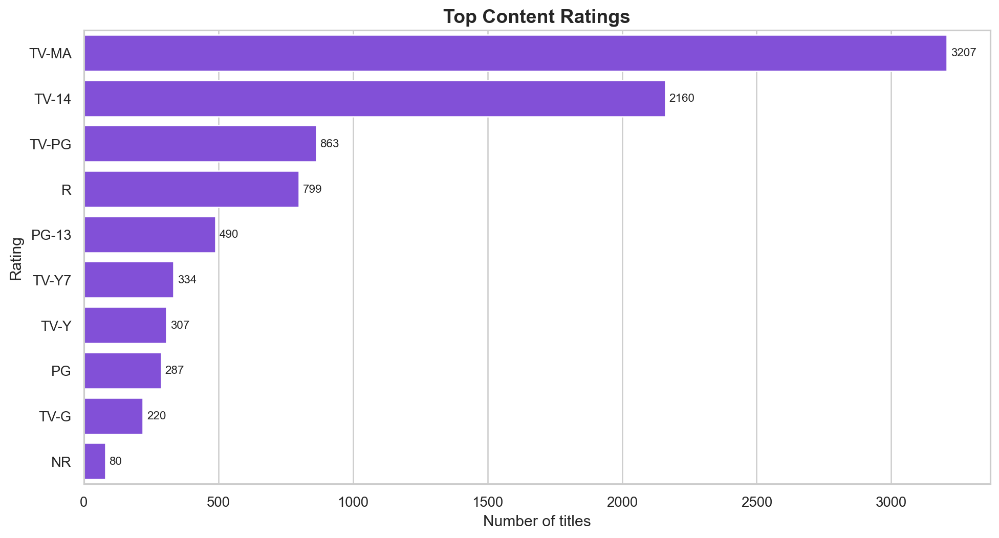
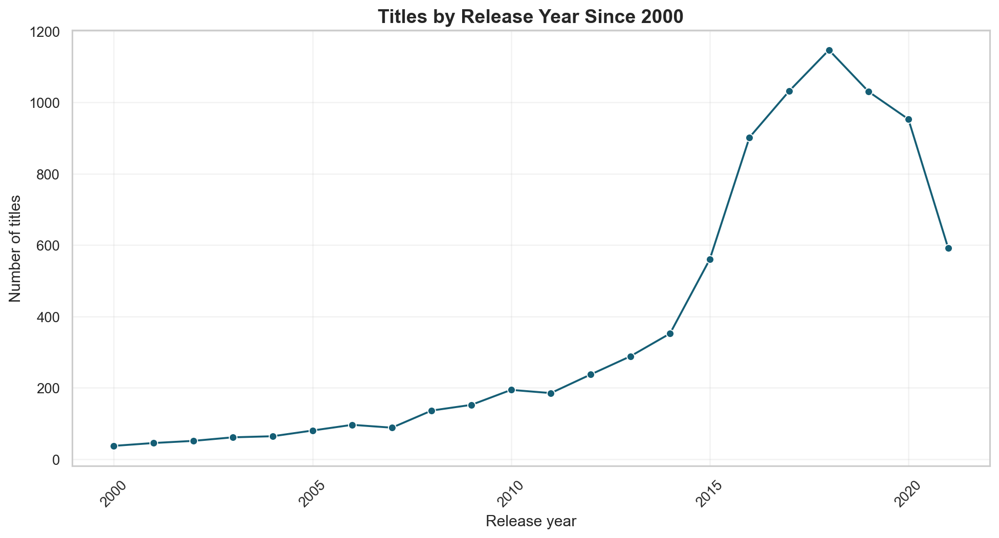
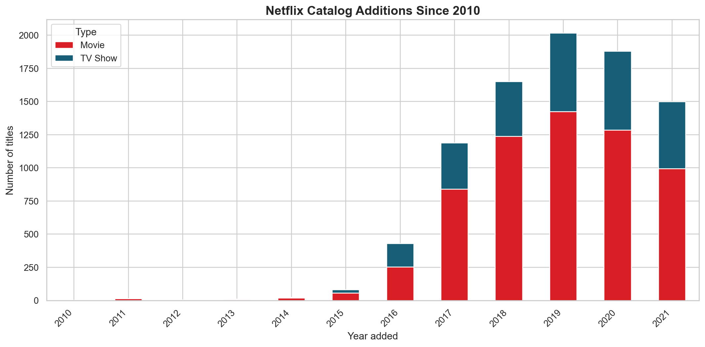

1. Title
Data Analysis and Visualizations on Netflix Titles Dataset
2. Step 1: Load The Data
The CSV file contains Netflix catalog records with title type, title name, director, cast, country, date added, release year, rating, duration, genre categories, and description.
| show_id | type | title | director | cast | country | date_added | release_year | rating | duration | listed_in | description |
|---|---|---|---|---|---|---|---|---|---|---|---|
| s1 | Movie | Dick Johnson Is Dead | Kirsten Johnson | NaN | United States | September 25, 2021 | 2020 | PG-13 | 90 min | Documentaries | As her father nears the end of his life, filmmaker Kirsten Johnson stages his death in inventive and comical ways to help them both face the inevitable. |
| s2 | TV Show | Blood & Water | NaN | Ama Qamata, Khosi Ngema, Gail Mabalane, Thabang Molaba, Dillon Windvogel, Natasha Thahane, Arno Greeff, Xolile Tshabalala, Getmore Sithole, Cindy Mahlangu, Ryle De Morny, Greteli Fincham, Sello Maake Ka-Ncube, Odwa Gwanya, Mekaila Mathys, Sandi Schultz, Duane Williams, Shamilla Miller, Patrick Mofokeng | South Africa | September 24, 2021 | 2021 | TV-MA | 2 Seasons | International TV Shows, TV Dramas, TV Mysteries | After crossing paths at a party, a Cape Town teen sets out to prove whether a private-school swimming star is her sister who was abducted at birth. |
| s3 | TV Show | Ganglands | Julien Leclercq | Sami Bouajila, Tracy Gotoas, Samuel Jouy, Nabiha Akkari, Sofia Lesaffre, Salim Kechiouche, Noureddine Farihi, Geert Van Rampelberg, Bakary Diombera | NaN | September 24, 2021 | 2021 | TV-MA | 1 Season | Crime TV Shows, International TV Shows, TV Action & Adventure | To protect his family from a powerful drug lord, skilled thief Mehdi and his expert team of robbers are pulled into a violent and deadly turf war. |
| s4 | TV Show | Jailbirds New Orleans | NaN | NaN | NaN | September 24, 2021 | 2021 | TV-MA | 1 Season | Docuseries, Reality TV | Feuds, flirtations and toilet talk go down among the incarcerated women at the Orleans Justice Center in New Orleans on this gritty reality series. |
| s5 | TV Show | Kota Factory | NaN | Mayur More, Jitendra Kumar, Ranjan Raj, Alam Khan, Ahsaas Channa, Revathi Pillai, Urvi Singh, Arun Kumar | India | September 24, 2021 | 2021 | TV-MA | 2 Seasons | International TV Shows, Romantic TV Shows, TV Comedies | In a city of coaching centers known to train India’s finest collegiate minds, an earnest but unexceptional student and his friends navigate campus life. |
| s6 | TV Show | Midnight Mass | Mike Flanagan | Kate Siegel, Zach Gilford, Hamish Linklater, Henry Thomas, Kristin Lehman, Samantha Sloyan, Igby Rigney, Rahul Kohli, Annarah Cymone, Annabeth Gish, Alex Essoe, Rahul Abburi, Matt Biedel, Michael Trucco, Crystal Balint, Louis Oliver | NaN | September 24, 2021 | 2021 | TV-MA | 1 Season | TV Dramas, TV Horror, TV Mysteries | The arrival of a charismatic young priest brings glorious miracles, ominous mysteries and renewed religious fervor to a dying town desperate to believe. |
| s7 | Movie | My Little Pony: A New Generation | Robert Cullen, José Luis Ucha | Vanessa Hudgens, Kimiko Glenn, James Marsden, Sofia Carson, Liza Koshy, Ken Jeong, Elizabeth Perkins, Jane Krakowski, Michael McKean, Phil LaMarr | NaN | September 24, 2021 | 2021 | PG | 91 min | Children & Family Movies | Equestria's divided. But a bright-eyed hero believes Earth Ponies, Pegasi and Unicorns should be pals — and, hoof to heart, she’s determined to prove it. |
| s8 | Movie | Sankofa | Haile Gerima | Kofi Ghanaba, Oyafunmike Ogunlano, Alexandra Duah, Nick Medley, Mutabaruka, Afemo Omilami, Reggie Carter, Mzuri | United States, Ghana, Burkina Faso, United Kingdom, Germany, Ethiopia | September 24, 2021 | 1993 | TV-MA | 125 min | Dramas, Independent Movies, International Movies | On a photo shoot in Ghana, an American model slips back in time, becomes enslaved on a plantation and bears witness to the agony of her ancestral past. |
3. Step 2: Pre-process The Data
Cleaning operations performed: removed duplicate IDs, filled missing text fields with meaningful labels, converted date values into date objects, extracted year/month added, extracted primary country and primary genre, and converted duration into a numeric field where possible.
Before Preprocessing
| rows | columns | duplicate_show_ids | missing_values |
|---|---|---|---|
| 8807 | 12 | 0 | 4307 |
After Preprocessing
| rows | columns | duplicate_show_ids | missing_values_in_original_columns | misplaced_durations_fixed |
|---|---|---|---|---|
| 8807 | 18 | 0 | 0 | 3 |
Missing Values Before Cleaning
| column | missing_count |
|---|---|
| show_id | 0 |
| type | 0 |
| title | 0 |
| director | 2634 |
| cast | 825 |
| country | 831 |
| date_added | 10 |
| release_year | 0 |
| rating | 4 |
| duration | 3 |
| listed_in | 0 |
| description | 0 |
4. Step 3: Analytical Operations
The selected operations focus on content mix, countries, ratings, genres, release trends, and additions to Netflix over time.
Top Countries
| country | title_count |
|---|---|
| United States | 3211 |
| India | 1008 |
| Unknown | 831 |
| United Kingdom | 628 |
| Canada | 271 |
| Japan | 259 |
| France | 213 |
| South Korea | 212 |
| Spain | 181 |
| Mexico | 134 |
Top Genres
| genre | title_count |
|---|---|
| International Movies | 2752 |
| Dramas | 2427 |
| Comedies | 1674 |
| International TV Shows | 1351 |
| Documentaries | 869 |
| Action & Adventure | 859 |
| TV Dramas | 763 |
| Independent Movies | 756 |
| Children & Family Movies | 641 |
| Romantic Movies | 616 |
Ratings
| rating | title_count |
|---|---|
| TV-MA | 3207 |
| TV-14 | 2160 |
| TV-PG | 863 |
| R | 799 |
| PG-13 | 490 |
| TV-Y7 | 334 |
| TV-Y | 307 |
| PG | 287 |
| TV-G | 220 |
| NR | 80 |
Recent Release Years
| release_year | title_count |
|---|---|
| 2021 | 592 |
| 2020 | 953 |
| 2019 | 1030 |
| 2018 | 1147 |
| 2017 | 1032 |
| 2016 | 902 |
| 2015 | 560 |
| 2014 | 352 |
| 2013 | 288 |
| 2012 | 237 |
5. Step 4: Visual Analysis
Movies vs TV Shows

Top 10 Producing Countries

Top 10 Genres

Most Common Ratings

Release Trend Since 2000

Netflix Additions by Year and Type

6. Step 5: Front-End Output Screenshots
This HTML file is the front-end presentation of the analytical results. The charts above can be used directly as output screenshots for submission.
Generated files are saved in the output folder: cleaned CSV, charts, summary tables, and this report.
7. Conclusion
- The dataset contains 8,807 records, which is above the required 3,000-record minimum.
- Movies dominate the catalog with 6,131 titles, compared with 2,676 TV shows.
- The United States is the leading primary country with 3,211 titles, followed by India with 1,008.
- The most common genre label is International Movies, appearing in 2,752 records.
- The most frequent content rating is TV-MA, with 3,207 titles.
- Netflix additions increased strongly after 2015, showing rapid catalog expansion in the later years of the dataset.
- Preprocessing improved usability by replacing blank categorical values, extracting clean date parts, and creating analysis-friendly country, genre, and duration fields.